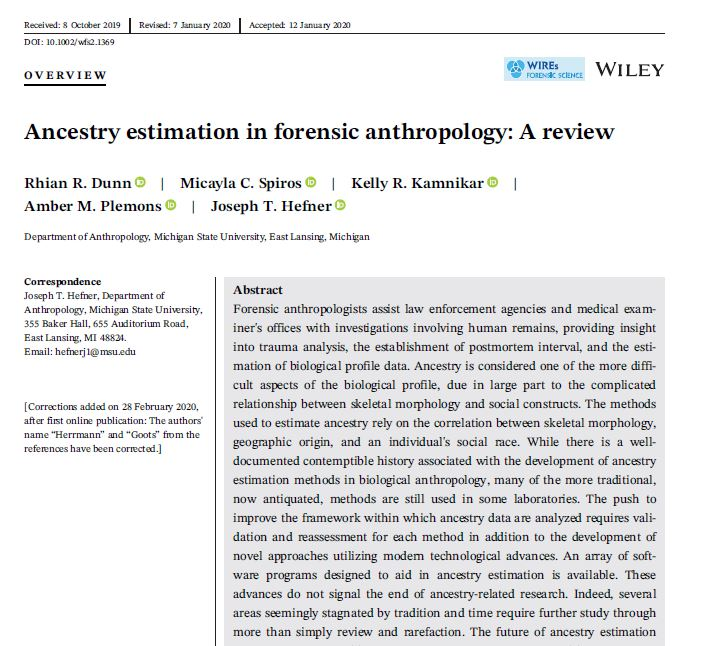

Research Articles
Explore sample sources for articles required by the American Board of Forensic Anthropology Exam.

Research Topics
Explore sample sources for different research foci in forensic anthropology literature.
Skeletal Collections
Learn more about the collections sourced by the articles listed on this exploratory website.